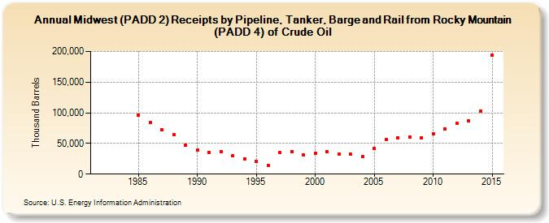

|
Download Data (XLS File) |
|
||||||||
|  | ||||||||
| Midwest (PADD 2) Receipts by Pipeline, Tanker, Barge and Rail from Rocky Mountain (PADD 4) of Crude Oil (Thousand Barrels) | ||||||||
| Decade | Year-0 | Year-1 | Year-2 | Year-3 | Year-4 | Year-5 | Year-6 | Year-7 | Year-8 | Year-9 |
|---|---|---|---|---|---|---|---|---|---|---|
| 1980's | NA | NA | NA | NA | 96,117 | 84,754 | 72,253 | 64,138 | 47,004 | |
| 1990's | 38,866 | 35,868 | 36,213 | 29,441 | 25,272 | 20,162 | 14,265 | 34,781 | 36,894 | 30,740 |
| 2000's | 33,873 | 36,033 | 32,747 | 32,268 | 28,281 | 41,646 | 56,356 | 59,770 | 60,532 | 59,241 |
| 2010's | 65,278 | 73,148 | 82,370 | 86,861 | 102,696 | 194,035 | 183,012 |
| - = No Data Reported; -- = Not Applicable; NA = Not Available; W = Withheld to avoid disclosure of individual company data. |
| Release Date: 1/31/2017 |
| Next Release Date: 9/29/2017 |